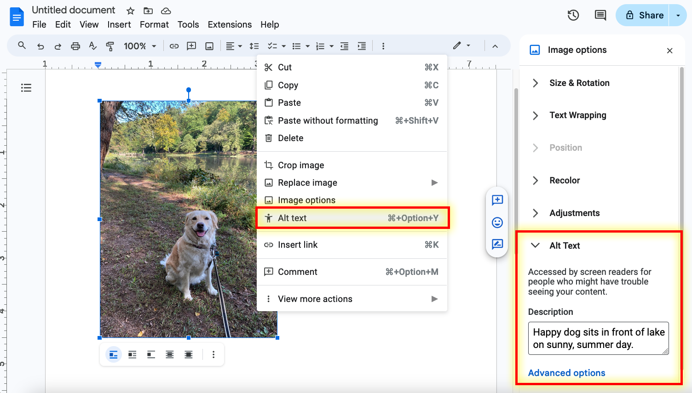

An Introduction to Alt Text
Alt text (short for alternative text) is a written description of an image displayed on a digital device with a screen (such as a computer, smartphone or tablet).
Alt text makes visual content (such as pictures) accessible to people who can’t see / process such content, for whatever reason.
Alt text is read by something called a screen reader, which is basically a type of software that reads the content on a screen (computer screen, phone screen, etc.) and relays back the content information to the person using the screen reader.
It can do this in 1 of 2 ways - either by reading it out loud with a synthetic (computer generated) voice or by providing the information on a refreshable braille display. A screen reader user can also use both of these outputs at the same time.
Screen readers are used by different people for different reasons but they are commonly used by people who:
- are blind or have low vision
- experience differences in visual processing (dyslexia is one example)
Alt text is a fundamental part of web accessibility. But it also serves a few other purposes. For example: if an image fails to load on a webpage, the alt text will show up instead (if there is alt text provided).

The image above (found here on this website) shows what happens when an image doesn't load correctly. If there is alt text provided for the image, the viewer can still find out what information you're trying to provide.
Alt text also helps people who need to disable images on their web browsers, maybe due to limited data or poor internet connection.
Lastly, alt text plays a role with SEO (Search Engine Optimization). I won't be discussing SEO in this website, though. We'll be looking at alt text as an accessibility tool above all else.
The origins of alt text
The concept of alt text originates from the “alt” attribute (also known as alt tag or alt description) in HTML, which is a coding language used to build websites.
(**NOTE- If you don't know how to code- that's no worries!! You don't have to be someone who codes in order to provide alt text. If this section feels hard to follow, feel free to skip ahead to the next section titled "Alt text for non-coders")
If you do want to talk code for a second- let's do it! This is how you code an image in HTML:
<img src="insert image file name here" alt="insert alt text here">
The part where it says “alt”- that’s where you include your alt text (a description of the image you are coding).
"Alt" is short for alternative. The alt attribute was introduced in HTML 2.0, which was published in 1995 by the Internet Engineering Task Force (IETF).
Alt text for non-coders
Don't know how to code? That's no problem at all! A lot of programs offer the opportunity to provide alt text without having to touch any code.
Here is one example- this is a Google Doc. When you right click on an image in Google Docs, you can then click on "Alt Text", which will open up a textbox where you can type in your alt text!
Each program / website is going to be a little different when it comes to adding alt text (and some programs / websites unfortunately do not have direct, built in ways of providing alt text). Doing a quick Google search (for example: “how to add alt text to PowerPoint”) can let you know how to approach alt text in the program / website you’re using.
Something I’ve learned through researching this topic is that there are workaround ways of adding alt text, one of which is providing a description of the image in the image caption or nearby text.
Here are a few places where you can add alt text without touching any code:
- Certain social media platforms:
- Instagram, Facebook, Twitter, Pinterest, Tumblr, LinkedIn
- Google Workspace
- Google Docs, Slides, Sheets
- Microsoft Office
- Microsoft Word, PowerPoint, Excel, Outlook
- Adobe Acrobat
- This is one way to add alt text to PDFs!
- Websites commonly used by designers:
- Are.na, Behance, Canva, Wix, Squarespace, WordPress
How do you write alt text?
You might be thinking “Okay, cool- so I know where I can put alt text but how do I decide what to put for my alt text? How do you write alt text?” Good question!
So, I first want to start off by mentioning that you can write alt text for any type of visual / non-text content. This includes more complex images, like graphs and charts. Since this is meant to be an introduction, let’s just focus on learning how to write alt text for basic images, kind of like this one:
So, essentially- what we’re doing when we write alt text is we’re describing the image. But we’re not just describing what is in the image. We want to try and figure out why that image is there, and what information is being conveyed. The goal of alt text is to present the information in a way that makes sense with the surrounding content.
While there are things to avoid when writing alt text- alt text is unique in that there is not just one, singular correct way to write it (which I think is kind of cool). I’ve heard someone say that writing alt text is more of an art than a science, which I think is a good way of describing it.
Something I’ve learned through research is that there are a lot of different opinions on how to write alt text. I’m going to be sharing things I’ve seen / heard through my research on this topic, but know that there are a lot of varying perspectives on this topic! Ultimately, you have to decide how you want to approach alt text.
That being said, here are some commonly repeated pieces of advice that I encountered when researching how to write alt text:
- Leave out the phrase "image of" or "picture of"
- When a screen reader encounters an image, it first announces that it’s an image. So if you write alt text that says “Image of a dog”, the screen reader might read: “Image, image of a dog”.
- Avoid redundancy
- Be sure to look at surrounding text and make sure you’re not repeating any information. You want your alt text to work with your surrounding text to enhance the understanding of the content. You don’t want it to just be a duplicate of surrounding information.
- Pay attention to grammar
- Capitalize the first letter of a sentence.
- End with a period. Ending your alt text (or sentences within your alt text) tells the screen reader to pause. This makes it a better experience for the screen reader user, as the speech will be easier to understand.
- Be descriptive but concise
- It’s generally encouraged to keep alt text as short as possible (while still providing all necessary / important information).
- I’ve heard different things when it comes to specific recommended character limits, but I read that best practice guides suggest keeping alt text to around 125 characters. I’ve also seen the range of 100 to 250 characters be mentioned.
- Different programs / platforms will have different character limits.
- Some screen readers will cut off when reading alt text that is too long.
- If you can’t convey all the important information in a brief manner, there are a few things you can do. You can:
- Include a description of the image in the image caption or nearby text and just use something very short and basic for your alt text.
- If it is a complex image like a graph, you can also include a nearby text link to a document where you’re able to fully explain all the information in the image (show example).
- I came across this article when doing research for this website and the author (Daniel Göransson, who is a web developer and screen reader user) brought up a good point that I wanted to share.
Daniel mentioned how many sighted people (people who can see) might want to provide lots of information when writing alt text, since they don’t want to leave out any details that they get by looking at the image. I can totally relate to this, as I had a similar mindset when I first started writing alt text. But Daniel goes on to mention that when looking at images in a website or document, sighted users are able to get the necessary information at a glance. It doesn’t take up too much of our time. He then goes on to encourage us to try and create a similar experience for screen reader users.
- Context is everything
- As I mentioned earlier, when we’re deciding what to write for our alt text- we don’t necessarily want to just describe what we see (although that can be a good place to start!). We want to ask ourselves why that image is there. This is going to depend on the context.
- (Show example of same image in different contexts)
- Leave alt text for decorative images blank
- If there is an image in your website / document that doesn’t convey any essential information and is mostly just there to improve the look of your website / document, you can just leave the alt text blank.
- (show example of decorative image- like a line divider)
- There are ways to mark images as decorative in certain programs, such as ____ (need to look this up and provide link to tutorial)
- When coding, it’s important to still write an “alt” attribute even if the image is decorative (you can just write: alt=”” ). If don't include the alt attribute at all, the screen reader might read the image file name (which might be something like “IMG_8660.JPG”). If you write the alt attribute but leave it blank, the screen reader will know to ignore / skip over the image.
- Other food for thought
- Consider positional information (a glimpse of, a partial view, etc.).
- You don’t have to write your alt text or image descriptions alone! It can be fun and extremely helpful to put more than one brain together to write alt text / image descriptions.
- I came across this article where author Alex Chen lays out an interesting way to approach writing alt text / image descriptions!
Alex came up with a technique called “object-action-context”. To quote Alex directly, “The object is the main focus. The action describes what’s happening, usually what the object is doing. The context describes the surrounding environment. I recommend this format because it keeps the description objective, concise, and descriptive.”
Alex provides examples and elaborates more on this technique in the article.
Image description vs. alt text
If you dive into the world of alt text, you will likely encounter the term "image description". You may have noticed that I used this term a few times in the previous section. So what’s the difference between alt text and image descriptions?
Alt text is technically a form of image description (in the sense that you are partaking in the act of describing an image) but when it comes to web accessibility, there are some differences between the terms "alt text" and "image description".
From what I’ve learned so far, these seem to be the main differences:
○ Location: Alt text and image descriptions are “stored” in different places. Alt text is usually attached to an image, while image descriptions might be in the caption or nearby text.
○ Visibility: Alt text is usually only seen by screen readers. For example the image below is an example of an image with just alt text.
Now this is an example of an image with an image description:
![Screenshot of a twitter post displaying an image description above a photo. The post from Dogs Trust reads 'When someone says they're not a dog person. Image description:
White and brown Lurcher close up looking directly at the camera with his eyes slightly squinting giving a look of judgement. His ears are floppy and he has a black snoot.White and brown Lurcher close up looking directly at the camera with his eyes slightly squinting giving a look of judgement. His ears are floppy and he has a black snoot.'](../pics/image-description-example.png)
This is a post on Twitter and the author has included the image description in the caption of the post. So viewers with the ability to see will be able to see the image description, due to the location in which it's being put (it's not hiding in the back-end stuff).
○ Length: Alt text is limited to 100-250 characters, while image descriptions can be longer, like 280 characters, which is the length of a tweet.
○ Level of Detail: Image descriptions can offer more detail about visual elements compared to alt text because of their larger character limit. For instance, alt text might say "puddle on the floor," while an image description might describe it as "a puddle of orange juice on a white tiled kitchen floor."
Examples
Here are some examples of alt text:

Image source
Now here are some examples of
image descriptions:
(Need to find examples)
Other examples:
- Alt Text as Poetry Study Club (examples of both alt text / image descriptions)